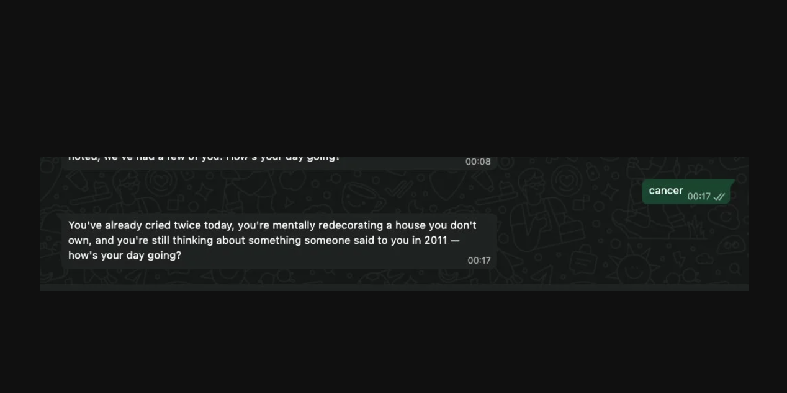
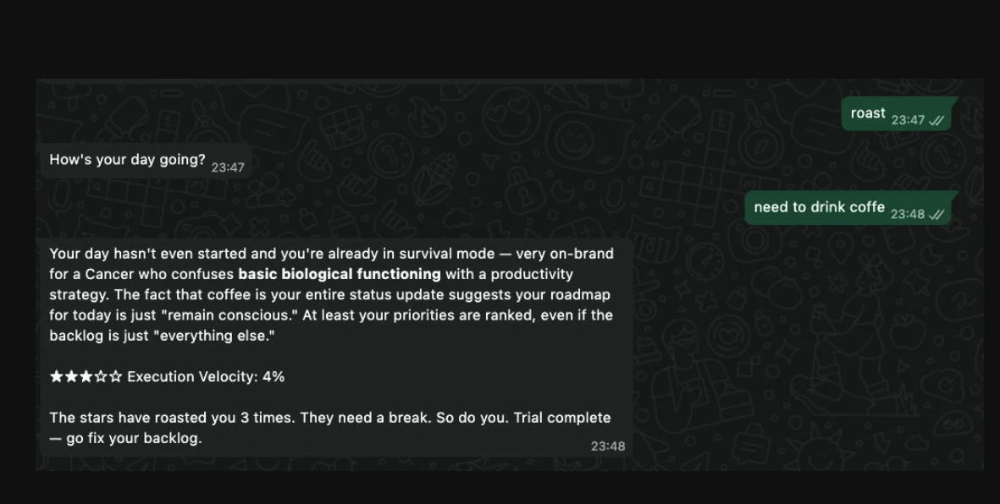

A WhatsApp bot that reads your day like a passive-aggressive PM mentor, then hands you a fake-but-plausible KPI.
After shipping the Reviews Bot I needed a palette cleanser. Something built purely for the joy of doing it, and to satisfy my quirky, weird sense of humor. No stakeholder. No ticket. No KPI to report.
I also wanted to push further into integrating the Anthropic API into platforms beyond the ones I already knew. That's when I started thinking about WhatsApp. And if WhatsApp, why not horoscopes. And if horoscopes, why not make them sharp.
The concept: you opt in with your zodiac sign, the bot asks how your day is going, and then it roasts you for your answer. Three rounds over a few days, like one of those old SMS subscription services you'd sign up for and half-forget about. Each round ends with a PM KPI, a fake but painfully plausible metric calibrated to whatever you just typed. After round three the bot says goodbye and goes quiet.
The goal wasn't a plain chatbot interaction where you prompt and it answers. It was a small recurring experience with a real arc. Something that got a little more accurate each time and knew when to stop.
Text your zodiac sign to register. The bot already has a read on you before you say anything else.
One open question. You answer in natural language. Whatever you type becomes the material.
Sign dysfunction plus your own words, used against you. Ends with a PM KPI. No template, generated fresh every time.
Before the session window closes, the bot nudges you that a new roast is ready. After round three it says goodbye and goes quiet. No open-ended loop.
I found I could use the Twilio sandbox to play around and build a real experience inside WhatsApp without needing a paid account or business approval. A sandbox number, a join keyword, and you're in. Good enough to ship something real.
The design challenge split into two fronts. Getting the tone right. And getting the mechanics right. Both took longer than expected.
The question was how to make an AI horoscope feel funny and controlled instead of generic and weird. The first attempts read like a corporate chatbot introducing itself. Warm. Safe. Nobody was going to screenshot that.
The key was to stop treating the opener as a greeting. The bot has already made a judgment. It's just telling you what it noticed. That same framing carried into the roast: not reacting to what you said, but confirming what it already suspected.
The opener is generated by Claude on every registration. Same sign, different line each time. The prompt gives Claude the sign's specific work dysfunction and tells it to write one sentence that sounds like it already knew you were coming. No hardcoded strings.
Early roast outputs felt like therapy sessions. Helpful. Reframing. Offering perspective. Completely wrong vibe. The prompt went through six iterations before the output started landing consistently.

The first fix was tone direction. Instead of asking Claude to "write a funny horoscope roast," the prompt described the character: a senior PM who has seen this pattern a thousand times and is not impressed. Dry. Deadpan. No warmth. No hedging. Just the verdict. The second fix was structure: give Claude the sign's specific work dysfunction AND the user's exact answer, and tell it to use one against the other. That combination is what makes it land.
After those iterations the roast bot finally started delivering genuinely funny, screenshottable experiences. The combination of sign dysfunction plus the user's own words used against them was the unlock.

Here's what the full exchange looks like in practice:
Each roast closes with a PM KPI — a fake but plausible metric with a specific number, calibrated to what the user described. No explanation. No context. Just the readout, dropped like a dashboard diagnosis.
WhatsApp has a platform rule enforced by Twilio: you can only send free-form messages if the user texted you first within the last 24 hours. That window opens on inbound, lasts 24 hours, then closes. The original plan was a daily 8am push. The bot reaches out, asks how your day is going. The window rule killed it. You can't initiate outside an active session.
So the product flipped to pull-based: the user texts roast to
trigger the next round. What looked like a platform limitation became the core
mechanic. The user controls the pace. That's actually a better product than
an alarm that goes off whether you want it or not.
The nudge still works within the window. The user just texted to get the roast,
which opens a fresh 24 hours. At hour 23, before the window closes, the bot
sends a heads-up: "The stars have a new roast ready in 1 hour. Send roast to
begin." The user texts roast, the window resets, and round 2
begins. The full arc looks like this:
The nudge had to be sent before the 24h session window closed, not after.
Sending it at hour 23 meant the message was guaranteed to land within the
active session the user opened when they got their roast. A simple DB queue:
when a roast fires, insert a row with send_at = now + 23 hours.
A cron queries pending nudges every 60 minutes, fires them via Twilio outbound,
marks them sent. Server restarts don't matter because the schedule lives in
the database, not in memory.
The 24h cooldown on roast requests also needed a message.
If the user texts roast too soon after their last one, the bot
replies: "the stars need 24 hours to recover from your last answer." Clean
state machine, no silent failures.
Twilio webhook replies require Content-Type: text/xml and a
TwiML envelope: <Response><Message>...</Message></Response>.
Regular JSON responses are silently ignored and Twilio falls back to its own
default demo reply with no error, no warning. Outbound messages like the nudge
use a completely different path: twilio.messages.create(), not TwiML.
Two reply mechanisms on the same platform. One of them fails invisibly.
Persisting the nudge queue in Postgres instead of memory meant the cron
survived every server restart cleanly. A row with send_at
and sent = false is a reliable job. A setTimeout
in a process that can get killed at any point is not.
Free-tier where it works, Twilio sandbox for WhatsApp testing.
End-to-end flow from first message to trial complete.
awaiting_answer state is treated as the answer. Gibberish included. Server saves last_answer and calls Claude to generate the roast.trial_day, sets state to active, and inserts a row into nudges with send_at = now + 23 hours. If this is day 3, the goodbye message fires instead and trial_complete = true.node-cron runs every 60 minutes. Queries nudges WHERE send_at <= now AND sent = false. If rows found, Twilio sends the nudge via messages.create() while the session window is still open. Row marked sent = true.active, trial_day < 3, and last_roast_at was more than 24 hours ago, bot asks the daily question again. Under 24 hours: cooldown reply. Repeat steps 4 to 7 for days 2 and 3.trial_day = 3, the goodbye message fires instead of a nudge. trial_complete = true is set. All subsequent messages from this phone are silently ignored.| TABLE | WHAT IT STORES |
|---|---|
| users | Phone, sign, state (awaiting_answer / active), trial_day (0-3), trial_complete, last_roast_at, last_answer. |
| nudges | Scheduled outbound messages. Phone, sign, send_at timestamp, sent boolean. Queried every 60 minutes by cron. |
| ENDPOINT | WHAT IT DOES |
|---|---|
| Webhook inbound | Twilio POSTs to /webhook on every inbound message. Body and From parsed from URL-encoded form data. |
| TwiML reply | Synchronous reply within the webhook response. Must be text/xml with a TwiML envelope. Used for all in-conversation replies. |
| messages.create() | Outbound API call for nudges sent outside the webhook flow. Requires active 24h session window. Used by the cron job. |
Generic prompts produce generic outputs. What made the roast land was combining the sign's specific work dysfunction with the user's own words turned against them. "You've spent three days emotionally processing the idea of making it" hits differently than "you seem stressed about your deadline." One uses what they said. The other could have been written for anyone. The prompt is the product.
When the prompt included specific example lines, Claude copied their structure instead of inventing. When the prompt described the voice without examples, "dry, deadpan, like you've seen this sign a thousand times and you're not impressed," Claude generated sharper, more varied material every time. The direction is more useful than the sample.
The welcome message went through six iterations. Every version that felt off shared the same problem: too generic, too warm, or too on-the-nose. The right version sounds like the bot already knew you were coming. That is not a copywriting problem. It is a product question about what the user should feel in the first second of interaction.
When a user sends nonsense, that is not invalid input. It is a signal about their state. Someone who sends asdkjhaslkd is either testing the bot, avoiding the question, or having a day so bad they can't form words. All three are roastable. The bot treats the non-answer as data and responds accordingly.
WhatsApp's session window rule meant cold daily pushes were impossible on
sandbox. The user had to initiate each round by texting roast.
But once they did, the window was open for 24 hours. Sending the nudge at
hour 23 meant it landed within that window, re-engaged the user, and kept
the arc alive without needing any special permissions. Understanding the
constraint precisely is what made both the pull mechanic and the nudge
possible at the same time.
Most messaging APIs have a synchronous reply path (responding directly to an inbound webhook) and an asynchronous outbound path (initiating a message independently). They often have different formats, authentication, and constraints. Treating them as the same thing is a common source of silent failures.
In-memory timers die when the process dies. A row in a database with a
send_at timestamp and a sent flag survives
restarts, crashes, and redeployments. A lightweight polling loop that
reads and processes pending rows is the foundation pattern behind every
production job queue.
A process that checks a queue every 60 minutes sounds expensive until you realize that finding zero rows costs essentially nothing. The query is the guard. When there is no work, there is no work done. This pattern scales naturally from a single user to thousands without changing the architecture.
The three-round trial arc is already shaped like an old SMS subscription service. You opt in, get content over a few days, and it ends. The natural next version is a renewable subscription: after the trial, the user gets a weekly roast if they stay subscribed. Renewal is a single message. Churn is silence. The product already has the infrastructure for it.
Managing a multi-step user journey through a channel with no persistent connection is a distinct engineering challenge. Every message arrives cold. State has to be reconstructed from storage on every request. Session windows, cooldown logic, and arc completion all live in the database. This pattern applies anywhere a product needs to maintain continuity with a user across a channel that has no memory of its own.
Right now each roast starts from scratch. A future version extracts structured signals from every answer, energy level, avoidance pattern, the one concrete thing mentioned, and stores them per user. Roast three references what you said in roast one. The product gets more accurate the more you use it. That is a meaningfully different product.